Electrical System Protection
6
Learning Outcome
When you complete this learning material, you will be able to:
Describe the protective devices used on alternators, motors, and electrical circuits.
Learning Objectives
You will specifically be able to complete the following tasks:
- 1. Describe the significance fuses and circuit breakers provide as protective devices including continuous rating, interrupting capacity, and inverse time principle.
- 2. Describe the purpose and designs of different types of fuses.
- 3. Describe the operation of circuit breakers used for different voltages, including moulded-case, oil-immersed, airblast, air-break, vacuum, and \( \text{SF}_6 \) switchgear.
- 4. Describe the operation of switches and contactors used for different voltages.
- 5. Explain the purpose, interpretation, and significance of protection relaying as it applies to the protection of a large alternator.
- 6. Explain the purpose, interpretation, and significance of the protection devices for a large motor.
Objective 1
Describe the significance fuses and circuit breakers provide as protective devices including continuous rating, interrupting capacity, and inverse time principle.
INTRODUCTION
Codes that regulate the installation of electrical equipment state that the equipment must be protected against overcurrent conditions that could cause harm. Fuses and circuit breakers provide such protection. Protective relays also provide this type of protection and will be discussed later in this module. Fig. 1 shows a three-phase power distribution network. The transformer is protected on the primary side by fuses. The motors are protected by circuit breakers. Motor overloads are another form of protection similar to fuses and are also used to protect motors.
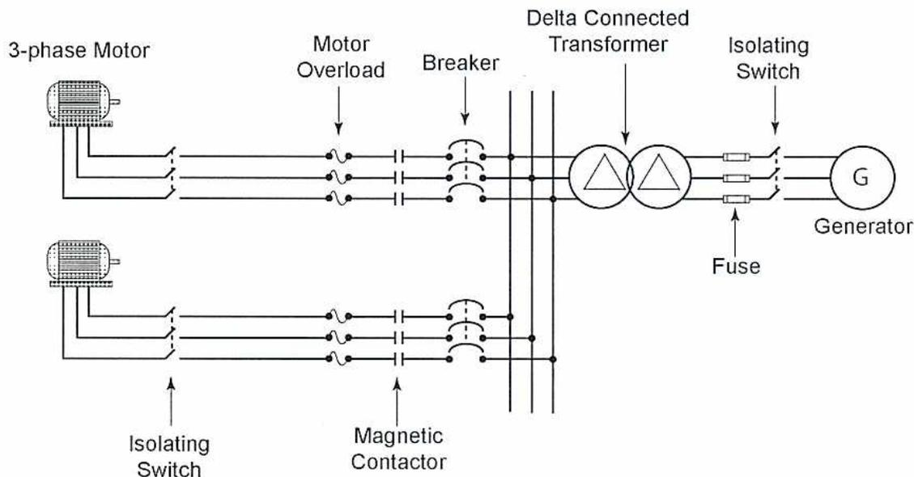
The diagram illustrates a three-phase power distribution network. On the right, a Generator (labeled 'G') is connected to a Delta Connected Transformer . The connection between the generator and the transformer includes an Isolating Switch and a Fuse . The secondary side of the transformer feeds two parallel 3-phase Motor branches. Each branch contains a Breaker , a Motor Overload , and a Magnetic Contactor . The Magnetic Contactor is connected to an Isolating Switch which then connects to the 3-phase Motor . The Delta Connected Transformer is represented by two overlapping circles with triangles inside.
Figure 1
Three-Phase Power Distribution Network
Breakers and fuses protect against two types of faults:
- • Overcurrent (overload)
- • Short-circuit current
If a circuit is designed to safely carry 100 A and suddenly draws 125 A, the circuit is in an overcurrent (overload) condition. This is a dangerous condition because the insulation of the conductors is subjected to excess heat generated by the excess current. If the overcurrent condition persists, the conductor insulation could be destroyed, which would allow the conductor to touch grounded metal, causing a short circuit to ground.
It is important to realize that a short circuit does not mean a circuit with zero resistance. The circuit will contain the resistance of conductors and the impedance of motors and transformers. The impedance limits the current, but a short circuit to ground could allow several thousand amperes of current to flow in the circuit; this could destroy equipment in a matter of seconds.
Transformer impedance is expressed in percent (%). For example, transformers rated between 250 kVA to 2500 kVA usually have an impedance of 5%. This means, if a short circuit of zero impedance occurs across the secondary terminals, the maximum current that the transformer itself can deliver is 20 times its full-load rating.
A short circuit can occur between one of the phases and ground, between two of the phases, or among all three phases.
Breakers and fuses automatically interrupt the current if a dangerous amount flows in the circuit. Both of these devices must have capacity to interrupt the amount of short circuit current that is available in the power distribution system. Extensive studies and calculations are undertaken to determine the amount of short circuit current in a power distribution system.
Continuous Rating
The continuous rating of a breaker or fuse refers to its ability to continuously carry a certain amount of current. A breaker with a continuous rating of 200A would not be installed to protect a circuit that draws 250 A.
The continuous rating of breakers and fuses is designed in increments. These increments may vary among manufacturers. For example, the full-load current for a circuit is calculated to be 84.4 A. It is not possible to purchase a breaker with a continuous rating of 84.4 A. Manufacturers may design breakers with the following increments: 70 A, 80 A, 100 A and 125 A. The continuous rating of the 70 A and 80 A breakers is too low to use in this circuit. Electrical codes state that a breaker may only be applied to 80% of its continuous rating. The 100 A breaker is also underrated. Therefore, a 125 A breaker is used in this example.
The continuous rating of breakers and fuses is affected by temperature. For example, a breaker may have a continuous rating of 100 A at 40 °C. The continuous rating would have to be derated if the breaker was installed at an ambient temperature of 50 °C.
Breakers and fuses are also rated according to the maximum voltage they can handle. A fuse rated for 250 V service could not be installed in a 600 V circuit.
Interrupting Capacity
Interrupting capacity is the capability of a device such as a breaker or a fuse to safely open an electrical circuit that is carrying a dangerous amount of current. This capacity is rated in root mean square (rms) A. A fuse used on a high voltage installation may have an interrupting capacity of 100 000 A. A different type of fuse used on a lower voltage installation may have an interrupting capacity of 10 000 A.
Inverse Time Principle
Breakers and fuses operate based on an inverse time/current principle. This means the greater the current flow, the faster the protective device will need to operate to clear the overcurrent fault or short circuit current. A breaker may clear a 10 000 A fault in 10 milliseconds. This is less than the time it takes to complete one AC cycle in a 60 Hz system.
The time current relationship is not linear. Fig. 2 shows the time current characteristics for a family of fuses rated at 250 V and from 2 A to 32 A.
The clearing time of a 32 A fuse if the circuit is drawing:
- • 450 A is 0.01 seconds
- • 100 A is 4.0 seconds
- • 40 A is several thousand seconds
- • 32 A or less – the fuse will not blow
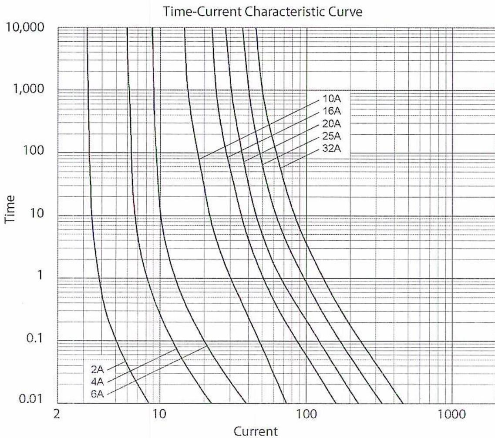
The graph displays the time-current characteristics for a series of fuses. The vertical axis represents 'Time' in seconds on a logarithmic scale from 0.01 to 10,000. The horizontal axis represents 'Current' in amperes on a logarithmic scale from 2 to 1,000. Eight curves are plotted, corresponding to fuse ratings of 2A, 4A, 6A, 10A, 16A, 20A, 25A, and 32A. Each curve shows the time required for the fuse to blow at a given current level. Higher-rated fuses generally have longer blow times for the same overcurrent level.
| Current (A) | 2A Time (s) | 4A Time (s) | 6A Time (s) | 10A Time (s) | 16A Time (s) | 20A Time (s) | 25A Time (s) | 32A Time (s) |
|---|---|---|---|---|---|---|---|---|
| 10 | 0.01 | 0.1 | 0.3 | 1 | 3 | 5 | 8 | 15 |
| 100 | 0.0001 | 0.001 | 0.003 | 0.01 | 0.03 | 0.05 | 0.08 | 0.15 |
Figure 2
Time-Current Characteristic for Fuses
Objective 2
Describe the purpose and designs of different types of fuses.
FUSES
Fuses fall into the following categories for low, medium and high voltage ratings.
- • Low Voltage – 1000V and below
- • Medium Voltage – greater than 1000V to 69 000V
- • High Voltage – greater than 69 000V
The inrush current versus time that exists when transformers, motors or similar equipment is energized is matched with the time-current characteristics of fuses.
Following are the basic types of fuses:
- • Single-element fast-acting
- • Dual-element time-delay
- • Expulsion
- • Current-limiting
Single-Element Fast-Acting Fuse
Single-element fast-acting fuses are used for protection of circuits where little or no current surges such as inrush. Purely resistive circuits are examples of these types of circuits. Fast-acting fuses are sometimes called cartridge fuses. Cartridge fuses (Fig. 3) consist of a cylindrical body and a fusible link. The fusible link is often called a fuse element. Under normal circuit conditions, the fuse simply acts like a circuit conductor. However, if the overload condition persists beyond a tolerable time, the circuit-opening fusible link is directly heated and destroyed by the passage of overload current through it. If a short circuit condition exists, the fault is cleared in the order of milliseconds. In some types of fuses, the fusible link is replaceable. In other cases, the entire fuse must be replaced.
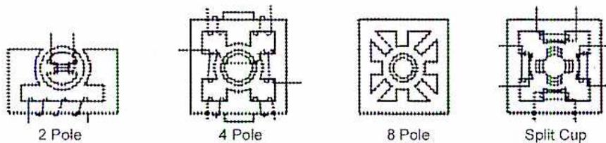
The image contains two diagrams of cartridge fuses. The left diagram shows a cartridge fuse with two metal end ferrules. A label 'Metal End Ferrules' points to these ferrules. Another label 'Fuse Link (Fuse Element)' points to a visible internal element. A label 'Cartridge Fuse' points to the bottom ferrule. The right diagram shows a similar cartridge fuse, but the internal fuse link is more clearly visible. A label 'Fuse Link (Fuse Element)' points to it, and another label 'Cartridge Fuse' points to the bottom ferrule.
Figure 3
Cartridge Fuse
The body of the fuse has metal end ferrules that allow the fuse to be installed in fuse-holders. The illustration on the left has copper blades on the ferrules that are part of the installation assembly. On this particular fuse, one blade is notched so that a fuse with different characteristics cannot be installed in the same circuit. This is known as a rejection feature. The fuse link is not visible in this type of fuse. The continuity of the fuse element is determined with a metre. The illustration on the right in Fig. 5 shows a cartridge fuse with a glass body. This allows the fuse link to be viewed.
When the link melts, a small gap is formed and the current will arc across the gap. The arc will continue to burn a larger gap until the resistance of the gap is such that there is insufficient energy remaining to sustain the arc. At this point, the arc is extinguished and the circuit is opened. In some fuses, the suppression of the arc is accelerated by filler material in the body of the fuse. The body of the fuse contains the arc and prevents damage that might occur from the melting fuse link.
Cartridge fuses, available in a variety of physical sizes, are used in many different circuit applications. They can be rated up to 10 000 V and have current ratings from 1/500 (0.002) A to 800 A.
Dual-Element Time-Delay Fuse
Dual-element time-delay fuses (Fig. 4) are constructed to have a longer operating time than ordinary fuses. However, they operate to clear short-circuit currents in about the same time as standard fuses. They have two parts: a thermal cut-out and a fuse link. The thermal cut-out, with its long time delay, operates on overload currents up to 500% of normal current. The fuse link interrupts current flow above 500%. This type of fuse is used in motor circuits. The fuse provides circuit protection but does not operate due to momentary high current flow during the motor starting period.
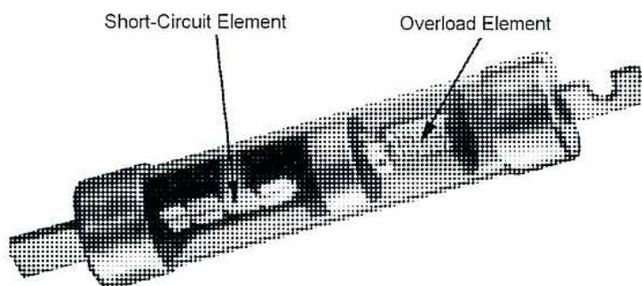
Figure 4
Dual-Element Time-Delay Cartridge Fuse
(Courtesy of Bussmann, Cooper Industries)
Fig. 5 shows the operation of a dual-element fuse with its distinct and separate overload and short circuit elements. In Fig. 5(a), the trigger spring, under overload conditions, fractures the calibrated fusing alloy and releases the connector. The dual-element fuse in Fig. 5(b) is shown open after operating under an overload condition. In Fig. 5(c), a short circuit causes the short-circuit element to melt. The arc produced is suppressed by the material surrounding the fuse element. The dual element fuse in Fig. 5(d) is shown open after operating under a short-circuit condition.
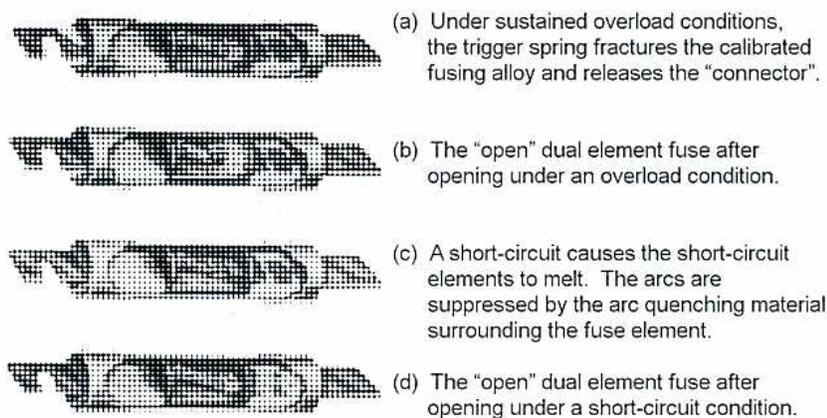
(a) Under sustained overload conditions, the trigger spring fractures the calibrated fusing alloy and releases the "connector".
(b) The "open" dual element fuse after opening under an overload condition.
(c) A short-circuit causes the short-circuit elements to melt. The arcs are suppressed by the arc quenching material surrounding the fuse element.
(d) The "open" dual element fuse after opening under a short-circuit condition.
Figure 5
Operation of a Dual-element Time-delay Cartridge Fuse
(Courtesy of Bussmann, Cooper Industries)
Expulsion Fuses
Expulsion fuses (Fig. 6) consist of a fusible element mounted in a tube. They incorporate some method of lengthening the arc that results when the fuse link melts. As the fuse link melts and vaporizes, the resulting gases build up pressure within the tube. The gases are blown out one end of the tube, which lengthens and suppresses the arc.
It is desirable for a fuse to clear a fault in less than one half-cycle of the AC waveform before a short-circuit current reaches its destructive potential. The energy delivered during a fault is a function of the time the fault is allowed to exist and the magnitude of the current.
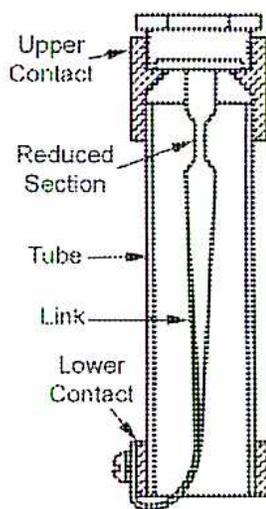
A cross-sectional diagram of an expulsion fuse. It shows a vertical tube containing a fuse element. The element is connected to an upper contact at the top and a lower contact at the bottom. A specific section of the element is labeled as the 'Reduced Section'. The tube itself is labeled 'Tube', and the internal element is labeled 'Link'.
Figure 6
Expulsion Fuse
Liquid-filled fuses (Fig. 7) are another type of expulsion fuse that use liquids to quench the arc. The fuse element is anchored to the top ferrule of a glass tube filled with a quenching hydrocarbon. The rest of the tube is filled with a spring that holds the element under tension. When the element melts, the spring pulls the two parts of the element apart which extends the arc. The arc is suppressed in the liquid which is often a non-conducting hydrocarbon.
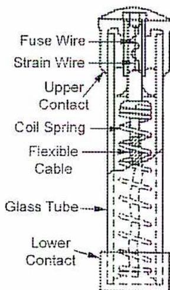
A cross-sectional diagram of a liquid-filled fuse. It features a glass tube containing a fuse wire and a strain wire. The fuse wire is connected to an upper contact at the top and a lower contact at the bottom. A coil spring is shown within the tube, connected to the fuse wire. Other labels include 'Fuse Wire', 'Strain Wire', 'Upper Contact', 'Coil Spring', 'Flexible Cable', 'Glass Tube', and 'Lower Contact'.
Figure 7
Liquid-filled Fuse
Current-Limiting Fuses
Current-limiting fuses (Fig. 8) are used to provide high-speed protection of low-voltage and medium-voltage power systems. Current-limiting fuses use a silver ribbon element, surrounded by fine granular silica sand, housed in a fibreglas tube. During high levels of fault current, the element heats and vaporizes along much of its entire length. The high temperature of the resulting arc melts the sand around the arc, forming a glass-like structure. The structure restricts the arc, causing the resistance of the fuse to increase dramatically. This added resistance changes the circuit power factor to near unity, which means current and voltage are in phase and cross the zero point at the same time. This allows the current-limiting fuse to clear the fault sooner – typically within a half cycle.
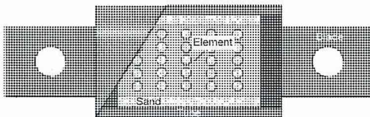
A cross-sectional diagram of a current-limiting fuse. It shows a central rectangular area labeled 'Element' surrounded by a granular material labeled 'Sand'. The entire assembly is enclosed within a fibreglas tube, which is shown as a shaded rectangular block. On either side of the tube, there are circular openings representing the electrical connections.
Figure 8
Current-limiting Fuse
Fig. 9 shows the peak current that is reached in the cycle from the time fault occurs to the time it reaches zero. The grey area, shown on the illustration, represents the amount of energy that is let through the fuse after the fault occurs. The melting time plus the arcing time is the total time to clear the fault.
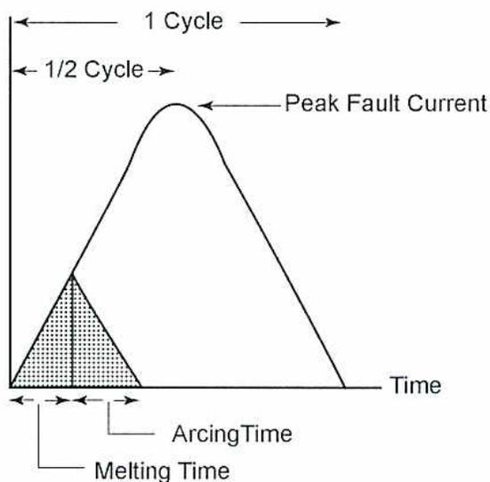
A graph showing current versus time for a current-limiting fuse. The vertical axis represents current and the horizontal axis represents time. A single cycle is marked as '1 Cycle', with a '1/2 Cycle' interval indicated. The peak current reached is labeled 'Peak Fault Current'. The time interval from the start of the fault to the start of arcing is labeled 'Melting Time'. The time interval from the start of arcing to the current reaching zero is labeled 'Arcing Time'. A shaded triangular area under the current curve represents the energy let through the fuse.
Figure 9
Current Limiting Fuse
North American Classes of Fuses
The North American fuse industry has developed a number of classes or standards for fuses with voltage ratings of 600 V or less. The data shown below includes the rated voltage, continuous current rating, and interrupting capacity.
Table 1
North American Classes of Fuses
| Class | Rated Voltage | Continuous Current Rating | Interrupting Capacity |
|---|---|---|---|
| Class CC | 600 V | up to 30 A | 200 kA |
| Class G | 300 V | up to 60 A | 100 kA |
| Class H | 250 and 600 V | up to 600 A | 10 kA |
| Class J | 600 V | up to 600 A | 200 kA |
| Class K | 250 and 600 V | up to 600 A | 50, 100, or 200 kA |
| Class L | 600 V | 601 to 6 000 A | 200 kA |
| Class R | 250 and 600 V | up to 600 A | 200 kA |
| Class T | 300 and 600 V | up to 600 A | 200 kA |
Objective 3
Describe the operation of circuit breakers used for different voltages, including moulded-case, oil-immersed, airblast, air-break, vacuum, and \( \text{SF}_6 \) switchgear.
CIRCUIT BREAKERS
A circuit breaker is a protective device designed to automatically interrupt a circuit in the event of overload or short-circuit current conditions. Breakers are designed to open (break) or close (make) the circuit while connected to the full load. The National Electric Code (NEC) defines a circuit breaker as “a device designed to open and close a circuit by non-automatic means and to open the circuit automatically on a predetermined overcurrent without damage to itself when properly applied within its rating.” Breakers are designed for repeated use.
Most breakers have a handle clearly marked as to the ON position and the OFF position. This handle is the non-automatic means referred to in the NEC definition. The handle allows the circuit to be manually energized or de-energized.
Similar to fuses, breakers are designed for ranges from 1A (and smaller) to several thousand A.
Arc Control
One of the common functions among all breakers is arc control. An arc is produced when a circuit is broken by the breaker. The arc is drawn across the current carrying contacts of the breaker as they are separated by the tripping mechanism. This is especially significant when the circuit is highly inductive. The rate of change in current that occurs when the circuit is broken can induce extremely high voltages that can ionize air and thereby maintain the arc. This is known as restriking voltage. It is the function of a breaker prevent restrike from occurring.
Part of the problem with the potential to restrike through ionized air is avoided by immersing the breaker contact in non-conductive oil. However, at higher voltages, there is still the potential to restrike through gas given off from the oil that decomposes in the initial stages of the arc.
Breakers are designed with arc chutes (Fig. 10) that direct the arc and ionized gases away from the current carrying contacts of the breaker. As the contacts separate, the increased length of the arc also increases its resistance, which decreases the current flow and the
amount of heat that is created. The arc and ionized gases are directed away from the contacts by the arc chute.
![Diagram illustrating the operation of an arc chute in a circuit breaker. The diagram is split into two parts: 'Contacts in Normal Position' on the left and 'Contacts in Overcurrent Position' on the right. In the normal position, the contacts are closed, and an arrow indicates the 'Direction of Current Flow'. In the overcurrent position, the contacts are open, and an arc is shown between them. The arc is directed into an 'Arc Chute', which is composed of several vertical 'Dissi pates' (split plates). The arc increases in length as it moves into the chute, and the plates help to dissipate and cool the arc. Arrows at the top of the chute indicate the upward flow of ionized gases.](78f163db583eb0c6d013e6f8ffe6d7d8_img.jpg)
Figure 10
Arc Chute
Frame Size
Breakers are manufactured in frame sizes. The National Electrical Manufacturers Association (NEMA) defines a frame as group of common parts which can include an interchangeable trip unit. Frame size refers to the maximum size of the trip unit that may be installed in the unit. For example, 200 A frame size may have an interrupting capacity of 10 000 A while a 600 A frame size may have an interrupting capacity of 20 000 A.
It is possible to specify a 200 A breaker in two different ways:
- • 200 A frame breaker with a 200 A trip unit
- • 600 A frame breaker with a 200 A trip unit
These two breakers are often represented on wiring diagrams and schematics as shown in Fig. 11.
![Figure 11: Breaker Frame Sizes. A single-line diagram showing two 3-phase motors connected to a common bus (A B C N). The top motor is protected by a 200/200 breaker, and the bottom motor is protected by a 200/600 breaker. A Delta/Wye Connected Transformer is connected to the bus, followed by an Isolating Switch and a Generator (G). Fuses are shown on the lines between the transformer and the isolating switch. A legend indicates that for the 200/600 breaker, 200 is the Trip setting and 600 is the Frame Size.](33ed1f9b27c7c21c797aa928b0f06851_img.jpg)
Figure 11
Breaker Frame Sizes
Breakers use the following mechanisms to automatically open the circuit:
- • thermal
- • magnetic
- • electronic
- • instantaneous
Thermal Mechanism
The thermal mechanism is a bimetal strip that heats during an overload condition. The rates of expansion of the dissimilar metals cause the breaker to trip. The breaker can be reset after the source of the fault is removed from the circuit and after sufficient time has passed for cooling.
Magnetic Mechanism
The magnetic mechanism is a solenoid or electromagnet. Large overload current or short-circuit current will generate enough flux to operate the solenoid, thereby tripping the breaker. Moulded-case breakers often employ a combination of thermal and magnetic trips to provide overload and short-circuit protection. They are commonly called thermal-magnetic breakers.
Electronic Trip
Electronic trip breakers use current sensors such as current transformers and electronic circuitry to trip the breaker. These breakers are more versatile because the electronic trip mechanism is adjustable, usually through a dial setting found on the front face of the breaker. On many units, the electronic circuitry can be expanded to include ground fault interruption (GFI) and undervoltage trips.
Instantaneous Trip
Instantaneous trip circuit breakers are designed only for short-circuit protection. They trip instantaneously under short-circuit conditions. This type of breaker is commonly used in motor circuits, but it must be used in combination with a motor overload device.
Moulded-case breakers can also be designed to be current limiting in that they limit the current under short circuit conditions and clear the fault in less than one-half cycle of the fault current.
Types of Circuit Breakers
The following types of circuit breakers are used, depending on voltage application:
- • moulded-case circuit breakers
- • oil-immersed circuit breakers
- • airblast circuit breakers
- • air-break circuit breakers
- • vacuum circuit breakers
- • \( \text{SF}_6 \) switchgear circuit breakers
Moulded-Case Circuit Breakers
NEMA defines a moulded-case circuit breaker as a breaker that is assembled as an integral unit in a supportive and enclosed housing of insulating material. The name moulded is derived from the insulating material that forms the case of the breaker. Often, injection moulding techniques using plastics and other materials are used to form the case.
This type is used as a low-voltage air circuit breaker. Electric circuits are completed or interrupted by moving the manually operated handle to the ON or OFF position. The linkage between the contacts and the operating handle is arranged for quick-make, quick-break contact action independent of the speed at which the handle is moved.
The breaker will automatically trip when the current flow exceeds a predetermined value. With regard to the lower current ratings, automatic tripping of the breaker is accomplished by a thermal tripping device. A bimetallic element in the thermal trip is calibrated to prevent the heat created by the normal current flow from causing a trip of the breaker. However, an abnormally high current created by either a short circuit or an overload causes the element to deflect and trip the linkage holding the circuit breaker contacts closed. Spring action then opens the breaker contacts.
The bimetallic element, being responsive to the current flowing through it, operates:
- • quickly for heavy currents resulting from short circuits
- • slowly for moderate overload currents
This desirable characteristic is used for protecting circuit conductors against overheating. A conductor's current carrying ability is limited by the operating temperature of the insulation. The operating temperature of the conductor is the sum of the temperature rise
due to the \( I^2R \) loss in the conductor and the ambient air temperature. A circuit breaker that uses a thermal element for tripping depends upon these two sources of heat for its operation.
Thermal trip elements in the larger current rated moulded-case breakers are supplemented by magnetic trip elements. A magnetic trip element uses the magnetic force surrounding the conductor to operate the breaker tripping linkage. Breakers with a combination thermal-magnetic trip have inverse-time thermal tripping for overload currents up to about 10 times the nameplate rating of the breaker. Above this level, there is an instant tripping of the breaker for short-circuit currents.
Moulded-case breakers are manufactured in a wide variety of sizes and ratings. Frame sizes range from 50 A to 4 000 A each with a standard range of continuous current ratings.
Fig. 12 shows the external appearance of a 3-pole moulded-case breaker. Fig. 13 shows the cutaway view of this type of breaker.
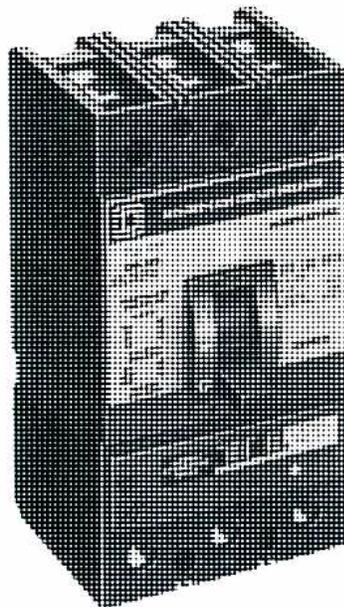
Figure 12
Three-Pole Moulded-case Air Circuit Breaker
(Courtesy of Square D Company)
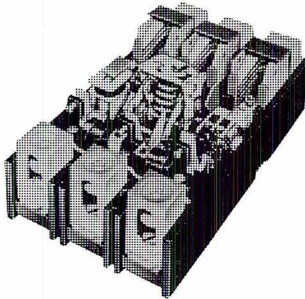
Figure 13
Cutaway View of a Three-Pole Moulded-case Air Circuit Breaker
(Courtesy of Square D Company)
Oil-Immersed Circuit Breakers
Oil circuit breakers use a hydrocarbon or similar product for the insulating medium while the arc is extinguished. Oil circuit breakers are commonly used on higher voltages than air circuit breakers. The oil serves three purposes:
- • to insulate the arc from grounded (earthed) metal and to confine it
- • to provide adequate cooling to arc the breaker contacts
- • to provide some arc control by the natural pressure of a head of oil
Switch oil, besides being an excellent insulator and effectively preventing arc spread, is, in bulk, a good fire extinguisher owing to the amount of heat required to raise a large volume of oil to ignition temperature. A head of oil also provides a path for cooling the hot gases from the arc region before they leave the surface and, by positioning the contacts low in the tank, the greatest volume of oil is available to provide heat transfer by convection to the tank walls.
A gas space above the surface of the oil also provides a cushion for the explosive force of the arc. All these factors are apparent in the design of the conventional oil circuit breaker, which, with wide variation in method of arc control, contact type and the number of breaks per phase, provides switching for voltage up to 275 kV and currents up to 3000 A.
Contacts may be open (plain break) or enclosed within an arc control device. Plain break, as the name implies, relies solely on the head of oil and the pressure in the confined space above it to control the arc. It is used only for low-voltage switchgear up to 650 V.
![Figure 14: Three-Phase Bulk Oil Circuit-breaker. This is a line drawing of a three-phase bulk oil circuit breaker. It features three vertical columns, each representing a phase. Each column has a series of horizontal insulating discs and a central assembly of contacts and arc chutes. The columns are mounted on a common base or tank structure. On the left side, there is a mechanical linkage system with various rods and levers, likely part of the operating mechanism. The drawing is a perspective view from the front-left.](3267a096e9ca525744d8cd820f12eb59_img.jpg)
Figure 14
Three-Phase Bulk Oil Circuit-breaker
There are two types of oil circuit breakers. In bulk oil breakers (Fig. 14), the entire breaker is immersed in a tank. A different design is used in minimum oil breakers (Fig. 15) that requires only approximately one-tenth the volume of oil. The oil must be properly maintained to preserve its dielectric strength.
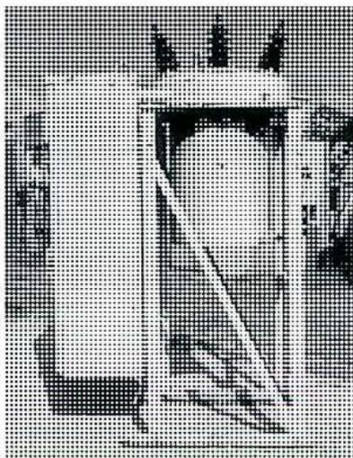
Figure 15
Minimum Oil Circuit Breaker
AirBlast Circuit Breakers
Airblast circuit breakers are used on extra high voltage systems with standard ratings up to 765 000 V. These breakers depend on a stream of compressed air that is directed toward the interrupting contacts to interrupt the arc formed. The very high velocity which may be imparted to a blast of air makes it possible to remove all ionized matter from the gap between circuit-breaker contacts in a few microseconds, after the arc has extinguished at the current zero. Air is the insulating medium for extinguishing the arc. The gases removed are replaced by cooler air which also helps in cooling the arc.
This is the principal advantage of the airblast circuit breaker, that the higher speed of operation, and consequently of reclosure is possible under fault conditions. This may be of value in maintaining system stability.
More frequent operation is also possible owing to the cooling effect of the air blast, and maintenance is relatively slight as the arc is very rapidly transferred from the main current-carrying contacts to auxiliary contacts.
Airblast circuit breakers may be classified according to the direction of the blast in relation to fixed and moving contacts. The two main types, axial blast and cross blast, are shown in Fig. 16. In the axial-blast type, Fig. 16(a), the arc is enclosed in the main air stream and subjected to severe constriction while the high velocity of the air over the electrode surfaces subjects the arc roots to the maximum possible scavenging action.
In these conditions, it is only necessary to draw the contacts apart a distance sufficient to withstand the maximum value of the restriking voltage transient with the air pressure on. The contact travel is therefore relatively small, and the use of air pressure to force the main contacts apart, which avoids the use of mechanical links and further reduces the inertia, gives the characteristically high speed of operation. Each pole of the circuit breaker is provided with an isolating switch, in series with the main contacts, which operates in free air.
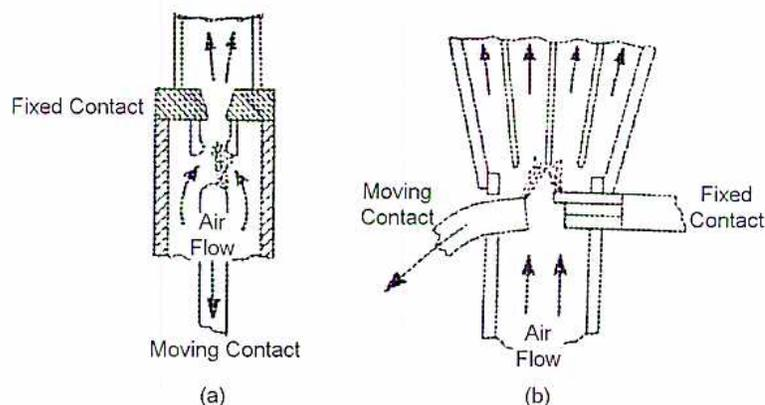
The diagram illustrates two configurations of airblast circuit breakers. Part (a) shows the axial blast type where a vertical air stream is directed between a 'Fixed Contact' at the top and a 'Moving Contact' at the bottom. The air flow is constricted in the gap, and an arc is shown being extinguished. Part (b) shows the cross blast type where a horizontal air stream is directed across the gap between a 'Moving Contact' on the left and a 'Fixed Contact' on the right. The air flow is directed upwards, crossing the gap and extinguishing the arc.
Figure 16
Types of Airblast Circuit breakers
This is necessary because the main contacts only open enough to withstand the restriking voltage under full air pressure. The isolator must open fully before the air valve shuts. With the air blast stopped, the main contacts come together again, leaving the circuit open at the isolator blade so that reclosing is effected by reversing the drive on the isolator arm and making the circuit in free air.
The cross-blast type, Fig. 16(b), permits wider separation of the main contacts and may be designed to avoid the use of a separate isolator switch.
The inherent difference in the method of arc extinction in oil and airblast circuit breakers is that in the former the amount of oil blast or turbulence is roughly related to the kVA to be broken since it is initiated by the arc itself. In airblast circuit breakers, the pressure and velocity are fixed by the design and are independent of the particular current to be interrupted.
In oil circuit breakers, the longer the arcing time, the greater the oil pressure and turbulence so that clearance within a given time is not a matter of urgency.
In airblast breakers, (Fig. 17), the air is normally provided from a pressure tank which refills after each operation. Thus, the longer the blast is on, the lower the pressure becomes, and to clear successfully the arc must extinguish within a given time and at the optimum contact separation.
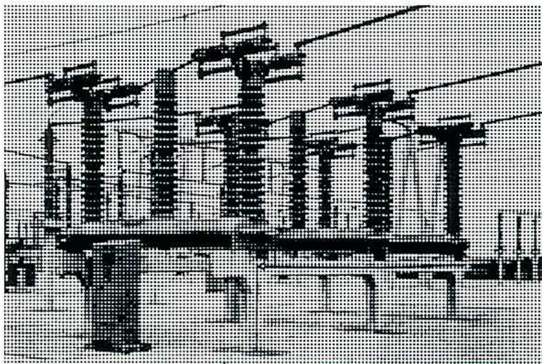
Figure 17
275 kV Airblast Circuit Breakers
(Courtesy of Metropolitan-Vickers)
Air-Break Circuit Breaker
Large air circuit breakers use a stored energy mechanism closing device that assures a fast, positive closing action. Energy is stored by compressing powerful springs which are linked through a latching mechanism to the breaker's contact assembly. Once the springs
are compressed, the latch may be operated. This action releases the springs a rapidly closes the breaker contacts.
A manually operated hand crank or a small electric motor is used to compress the breaker-closing springs. When the breaker closes, the operating mechanism is latched closed. This closing action also compresses a set of tripping springs. This action allows the breaker to be tripped by:
- • manually operating a trip latch at the breaker
- • energizing a solenoid trip coil via a remote-control circuit
When the trip latch operates, the compressed tripping springs quickly open the breaker contacts. Manually operated breakers, having a lower first cost than electrically operated breakers, are used when infrequent operation is required. Electrically operated breakers are selected when frequent operation or remote control is required. They may be tripped or closed from a remotely operated push button or control switch.
Once the electrically operated, stored energy breaker is tripped, the spring charging motor automatically starts. The closing springs are compressed to prepare the breaker for the next closing.
Fig. 18 shows a manually operated, stored energy, large air circuit breaker. A downward stroke of the large operating handle on the front of the breaker causes the closing springs to compress. The breaker is then closed by manual operation of the small closing lever. The breaker is tripped by pushing the trip lever.
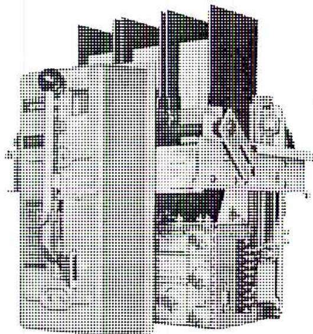
Figure 18
Three-Pole Large Air Circuit Breaker
(Courtesy of Siemens-Allis)
Some large air circuit breakers are automatically tripped by a direct-acting series overcurrent tripping device. The tripping device's operating coil is connected in series with the power circuit in which the breaker is installed. An abnormally high current flow causes a plunger in the tripping unit to come in contact with the latch of the breaker operating mechanism and thus open the breaker.
Another type of tripping system uses a static overcurrent trip unit (Fig. 18) in which energy is supplied from the power circuit through current transformers mounted in the breaker. When an overcurrent flow is detected by the tripping unit, a trip coil is energized to trip the breaker.
Large air circuit breakers, used in industrial and large distribution systems, are available with continuous current ratings as high as 4000 A and interrupting ratings as high as 130 000 A.
Vacuum Breakers
This type of breaker interrupts the flow of short circuit current by separating contacts in a vacuum chamber. The contacts of these breakers are installed in sealed ceramic and steel cylinders. Each phase contains two butt contacts, one stationary and the other movable. A flexible stainless steel bellows is welded to the stem of the movable contact. The contact can move without breaking the vacuum seal during operation of the interrupter.
The vacuum creates an environment that prevents ionization of the arc products during current interruption. The style and construction of the vacuum containers allow for a much smaller breaker. This type of vacuum interrupter can be used in both indoor and outdoor 5 kV and 15 kV class breakers. For high-voltage applications, several vacuum interrupter contacts are used in series for each phase. Fig. 19 (a) shows an internal view of a vacuum breaker while Fig. 19 (b) shows the external view.
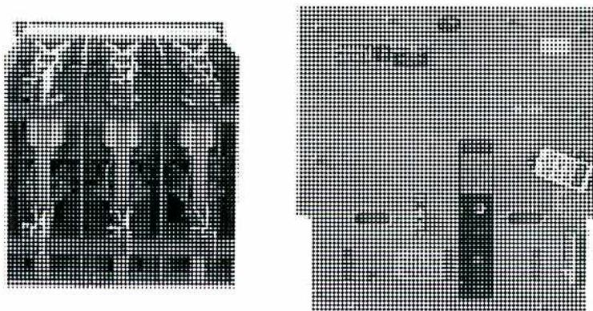
The image consists of two side-by-side photographs. The left photograph (a) shows the internal components of a vacuum breaker, including the vacuum interrupter units and associated mechanical linkages. The right photograph (b) shows the external view of the vacuum breaker, which is a large, dark-colored metal structure with various electrical connections and mechanical parts visible on its surface.
Figure 19
Vacuum Breaker
SF 6 Breakers
SF 6 (sulphur hexafluoride) gas is used in this type of breaker as an insulating and arc-quenching medium. These breakers are similar in construction to the air circuit breaker. SF 6 is a colourless non-toxic gas with good thermal conductivity and density approximately five times that of air. Fig. 20 shows a three-pole outdoor frame mounted breaker designed for use on circuits rated at 121 to 145 kV. This breaker consists of three cylindrical interrupting modules. Each module contains the SF 6 gas maintained under a pressure of 517 kPa. The main contacts and a puffer mechanism is contained in each interrupting module.
During an arc interruption, the puffer mechanism momentarily increases the SF 6 gas pressure in the space surrounding the breaker's main contacts. When the contacts part, the compressed gas flows along the arc and sweeps the hot gases formed by the arc from between the parting contacts. This extinguishes the arc, and the SF 6 gas then reverts to its lower pressure.
The operating mechanism of the breaker is pneumatically operated. During the closing of the breaker contacts, a spring is compressed. This provides the necessary energy to open the breaker.
Puffer breakers are used for voltage ratings as high as 765 kV, with interrupting ratings as high as 63 000 V. For voltage applications above 362 kV, two or more modules are connected in series in each phase of the breaker.
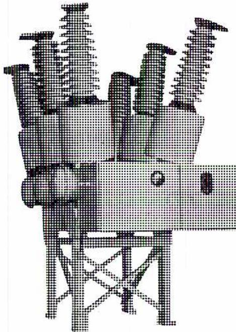
Figure 20
Outdoor SF
6
Circuit Breaker
(Courtesy of WM Power Products, Inc.)
Maintenance of High-Voltage Breakers
Circuit breakers should be inspected regularly and whenever the unit has operated due to overcurrent. Inspection intervals depend on the cleanliness of the breaker location and how often the breaker is operated. Most manufacturers recommend complete inspections, including oil testing where applicable, every 6 to 12 months for circuit breakers above 15 kV.
Maintenance techniques, such as thermography with infrared cameras, can be used to detect problems in high-voltage circuit breakers.
Objective 4
Describe the operation of switches and contactors used for different voltages.
SWITCHES
A switch is a device for isolating parts of an electric circuit. The important distinction about switches is that they do not operate automatically. They must be operated by a manual means such as an operating handle. Some switches, rated to interrupt continuous current, are classified as interrupting and disconnect switches.
These types of switches are also called:
- • safety switches
- • isolating switches
- • disconnect switches
- • load-break switches
Most electrical codes require that an isolating means be installed near a motor so that the motor can be isolated or disconnected from its power source while maintenance is carried out. This also provides safety in the event that power must be quickly removed from the motor and the breaker is located some distance away.
If a disconnect switch is used to isolate a motor, the power must first be removed at the source (breaker) before the disconnect switch can be safely operated. In the off position, the switch prevents power from being inadvertently restored before maintenance is complete.
Interrupting switches are not designed to be able to interrupt short circuit currents, but they are clearly labelled with a continuous current carrying capacity. Often, the switches are horsepower rated or kilowatt rated so that a switch with the proper capacity can be matched with the characteristics of the motor.
An interrupting switch is designed to make or break the circuit while it is operating under full load. Fuses are incorporated and placed in series with the switches. This device, called a safety switch (Fig. 21), provides overcurrent protection and serves as an isolating mechanism.
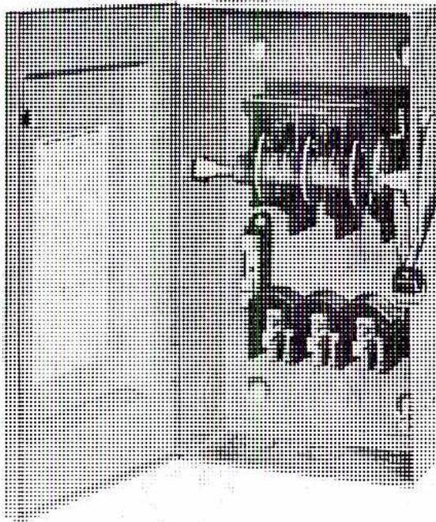
Figure 21
Three-Pole Safety Switch
(Courtesy of Square D Company)
Sometimes, a spring mechanism is linked with the operating handle of a switch. This design assists in breaking the arc generated when a switch is operated while under load. Switches designed for interrupting rated current in higher voltage applications use arc chutes.
Contactors
Magnetic contactors are used to switch loads. They are similar to relays, but in general, contactors are designed to operate under higher voltage ratings and current ratings. Contactors must be rated for voltage and continuous current ratings that match the applied load. Often, they are used in applications where the switching feature is controlled from a remote location. A magnetic contactor uses the principle of an electromagnet to open or close a circuit.
Fig. 22 shows a simple diagram of a contactor. A contactor in the open position is shown in Fig. 22(a) and Fig. 22(b) shows a contactor in the closed position.
![Figure 22: Contactor control circuit diagrams. (a) shows the initial state where the Remote Control Switch is open, the Contactor coil is de-energized, and the Load is not connected to the Voltage Source. (b) shows the state after the Remote Control Switch is closed, energizing the Contactor coil, which pulls the armature up to close the contacts and connect the Load to the Voltage Source. A Control Transformer is shown in both diagrams, connected to a Voltage Source and providing power to the Remote Control Switch and Contactor coil.](69b7bd65e85cdef6fdd7fb0a8194257c_img.jpg)
Figure 22 consists of two circuit diagrams, (a) and (b), illustrating the operation of a contactor. In both diagrams, a 'Control Transformer' is connected to a 'Voltage Source'. The secondary of the transformer is connected to a 'Remote Control Switch' and the coil of a 'Contactor'. In diagram (a), the Remote Control Switch is open, and the Contactor coil is de-energized. The main contacts of the Contactor are open, so the 'Load' is not connected to the 'Voltage Source'. In diagram (b), the Remote Control Switch is closed, energizing the Contactor coil. The electromagnetic force pulls the armature up, closing the main contacts and connecting the 'Load' to the 'Voltage Source'. Arrows indicate the flow of current in the control and power circuits.
Figure 22
Contactor
The remote switch is closed, which energizes the contactor. The electromagnet pulls up, which engages the contacts that supply power to the load. Often, a strong spring is used to return the armature of the contactor to its un-operated position when the control switch is turned off.
Usually, a control transformer supplies a low voltage such as 24V or 120V to the remote switch. This allows use of an inexpensive wiring method to one or more control switches.
Magnetic contactors are used for motors up to about 75 kW to accomplish automatic starting, stopping, and reversing. They are essentially air-break switches operated by a solenoid coil.
A magnetic contactor is a magnetically-operated switch that serves to open or close an electric circuit. Fig. 23 shows a cutaway view of a DC contactor. When energized, the operating coil pulls on the armature, causing the contact to close. The blowout coil is connected in series with the stationary contact and provides a magnetic flux to blow the arc up the chute where it is extinguished by elongation and cooling when the contacts are opened.
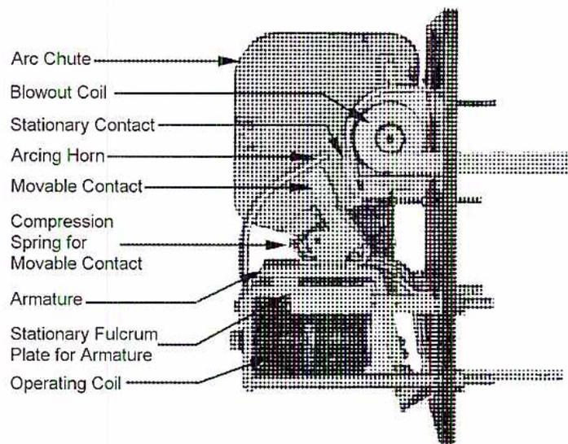
A detailed cutaway diagram of a DC Contactor. It shows the internal mechanical and electrical components. Labels with leader lines point to various parts: Arc Chute (a series of horizontal bars at the top), Blowout Coil (a coil around a magnetic core), Stationary Contact (fixed contact point), Arcing Horn (curved metal piece on the stationary contact), Movable Contact (contact point on the armature), Compression Spring for Movable Contact (spring mechanism), Armature (the moving part), Stationary Fulcrum Plate for Armature (pivot point), and Operating Coil (the main coil that pulls the armature).
Figure 23
Cutaway View of a DC Contactor
(Courtesy of General Electric)
Wear on the stationary and movable contacts is reduced by the arcing horn, which takes the brunt of the burning. The blowout coil shifts the arc to the arcing horn and the upper curved part of the stationary contact where it is extinguished.
Fig. 24 illustrates the behaviour of the magnetic blowout. The current through the coil sets up a flux in the north-south direction as shown. When the contacts separate, an arc is established in a direction perpendicular to the flux of the field. The resultant motor action pushes the arc upwards, stretching it until it breaks. AC contactors are also equipped with arcing horns and blowout coils. However, the magnetic material of the armature and the magnetic core of the coil are laminated to reduce eddy currents. A pole shader is used to prevent the magnetic pull from dropping to zero each time the current wave goes through zero.
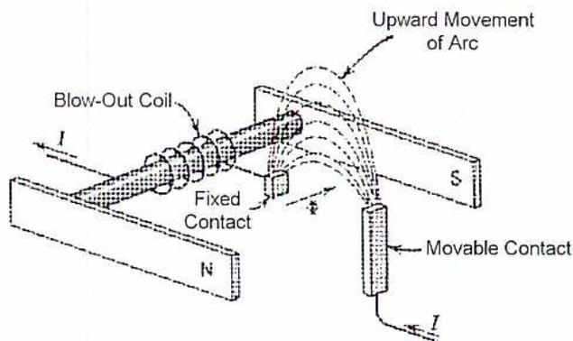
A schematic diagram illustrating the magnetic blowout principle. It shows a 'Blow-Out Coil' wound around a core, with current 'I' flowing through it. This coil creates a magnetic flux between a North (N) pole and a South (S) pole. A 'Fixed Contact' and a 'Movable Contact' are shown separating. As they separate, an arc is formed. The diagram shows the arc being pushed upwards, labeled 'Upward Movement of Arc', due to the interaction between the current in the arc and the magnetic field. Current 'I' is also indicated at the movable contact.
Figure 24
Magnetic Blowout
The pole shader, shown in Fig. 25, is a short-circuited coil on the face of the magnet. The shading coil acts as the short-circuited secondary of a transformer. The shading coil causes the flux in the shaded part of the pole face to lag behind the flux in the non-shaded part, illustrating Lenz's law. This prevents the resultant magnetic flux from falling to zero and thus reduces armature chatter.
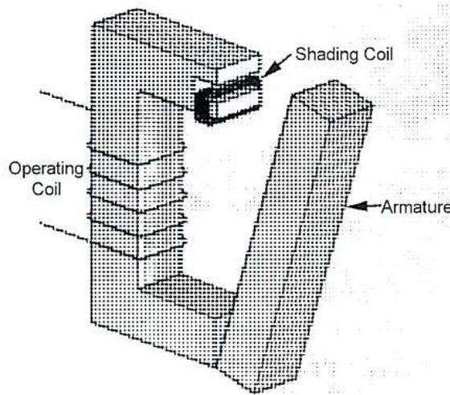
A 3D perspective diagram of a magnetic pole assembly. It features a large, rectangular magnetic core. On the left side of the core, a multi-layered 'Operating Coil' is wound. On the right side, a smaller, single-layer 'Shading Coil' is embedded in a slot. To the right of the pole face is a curved 'Armature'. The diagram illustrates the spatial relationship between the coils and the armature.
Figure 25
Pole Shader
Fig. 26 shows an AC triple-pole contactor. The apparatus consists of the main contacts which are switched ON or OFF by an operating mechanism actuated by a solenoid coil. It is fitted with a blowout coil adjacent to the contacts that helps extinguish the arc which is directed into the arc shield.
In the illustration, the arc shield over one of the main contacts has been lifted to show the detail of the contacts and blowout coil. Auxiliary contacts are fitted for alarms and controls.
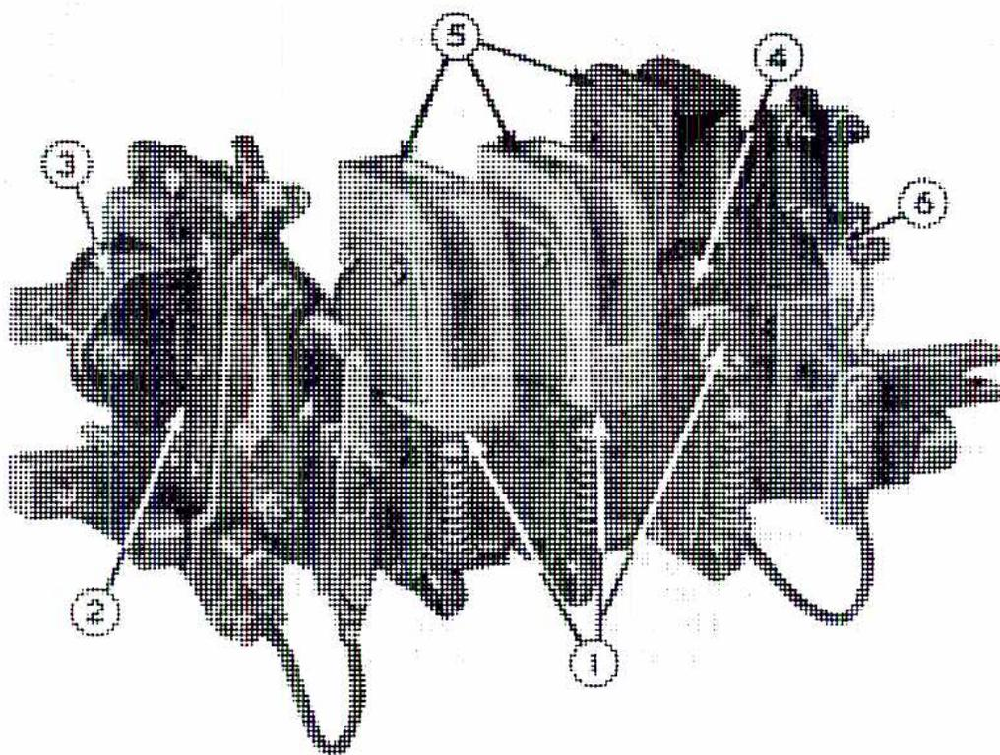
1 - Main Contacts
2 - Operating Mechanism
3 - Solenoid Coil
4 - Blow-out Coil
5 - Arc Shield
6 - Auxiliary Contacts
Figure 26
AC Triple-Pole Contactor
Objective 5
Explain the purpose, interpretation, and significance of the protection relaying as it applies to the protection of a large alternator.
PROTECTIVE RELAYS
Alternators are protected by devices called protective relays. A relay is a device that relays information from one location to another. For example, an overcurrent relay used to sense an overcurrent fault at a substation may trip a breaker many miles away in a generating station.
From a purely economic point of view, protective relays offer insurance. They protect the power utility or industrial client from financial loss. From an underwriter's point of view, they prevent accidents to personnel.
Some protective relays operate based on the following principles:
- • electromechanical principle
- • solid state and microprocessor-based principles
Electromechanical Principle
Electromechanical relays complete or interrupt a circuit by physically moving electrical contacts into contact with each other. These relays require more maintenance and are often more costly. Spare parts are another issue since many electromechanical relays are no longer manufactured.
Electromechanical relays fall into the following categories:
- • attraction type
- • induction type
Attraction Type
Fig. 27 shows the basic principle of the attraction type. A current transformer provides a current signal that is proportional to the current flowing in Phase C of a three-phase system. The current transformer has a ratio of 200:5. Under standard conditions (Fig. A), the current flowing through the coil of the relay will not produce the magnetic field necessary to operate the plunger. If the current flowing through Phase C reaches 200 A, the current flowing through the current transformer circuit will produce a strong enough magnetic field to attract the plunger. The plunger moves in the upward direction, which relays a signal to trip a breaker. This is a simple form of instantaneous overcurrent (IOC) protection. A time delay can be built into the relay in the form of a mechanical dashpot. This is known as time overcurrent protection .
The relay only provides protection on one of the phases. Normally, three current transformers and three relays would be used. A signal from any one of the three would trip the breaker, thereby clearing the fault.
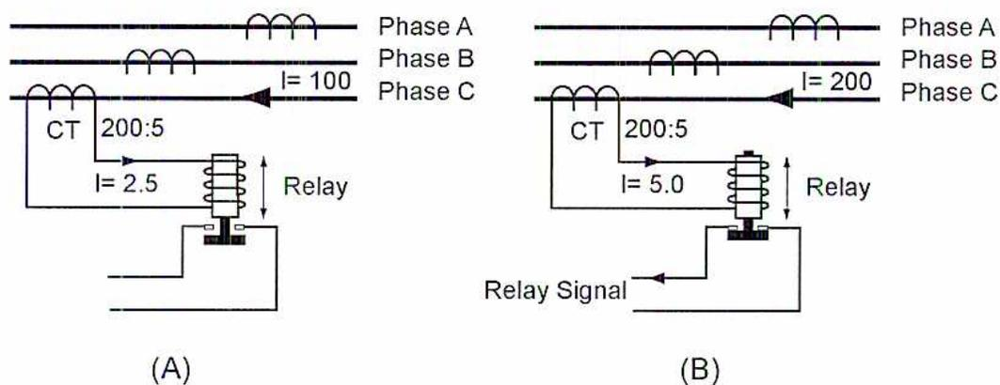
The diagram illustrates the operation of an attraction-type electromechanical relay in two scenarios. Both scenarios show a three-phase system (Phase A, Phase B, Phase C) with a current transformer (CT) on Phase C. The CT has a ratio of 200:5. In scenario (A), the primary current is 100 A, resulting in a secondary current of 2.5 A. In scenario (B), the primary current is 200 A, resulting in a secondary current of 5.0 A. The secondary current flows through the coil of the relay. The relay is shown with a coil and a set of contacts. In (A), the contacts are open. In (B), the contacts are closed, and a 'Relay Signal' is output.
Figure 27
Attraction type Electromechanical Relay
Induction Type
Protection schemes need to provide a response time that increases with the magnitude of current. This is known as the inverse time characteristic of overcurrent protection. The induction disc provides this response time. Fig. 28 shows the basic principle of induction discs. As is the case with all induction machines, a rotor and stator are involved in the operation of the relay. Coils are used to set up stator magnetic poles and the rotor is a disc made from a conducting material.
A current signal from a current transformer flows in the stator windings. Normally, there is not enough current to induce a voltage in the disc. As current in one of the phases increases, voltage is induced in the disc, which causes a current to flow. The induced current produces magnetic fields that interact with the magnetic field of the stator. The interaction of the two magnetic forces produces torque that spins the disc. The amount of torque produced and how fast the disc spins depend on the magnitude of the current in the stator. Contacts are closed and a signal is relayed if enough torque is produced to rotate the disc. The distance between the contacts can be adjusted to provide a time delay. A spring resets the disc to its closed position.
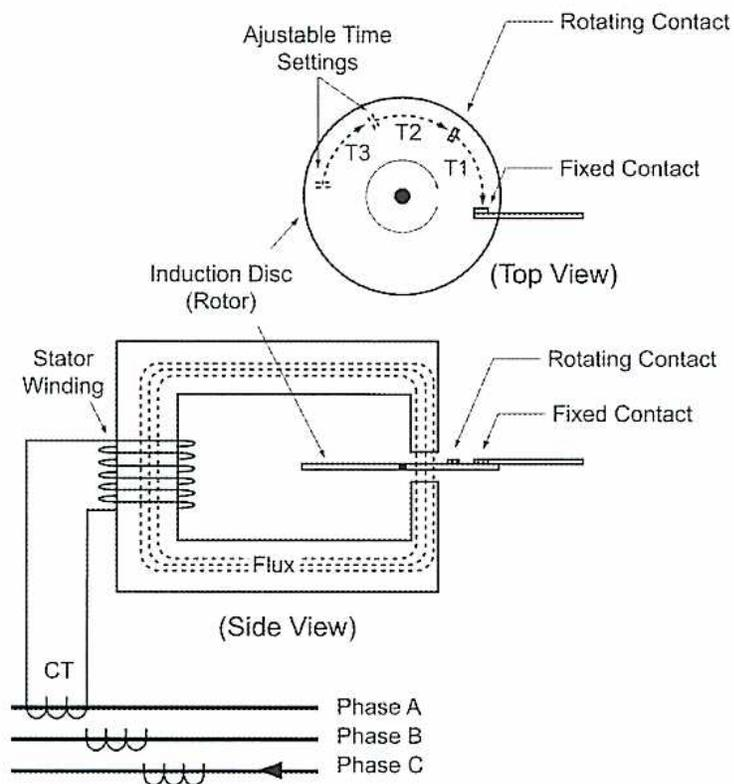
The diagram illustrates the internal structure of an Induction Disc Electromechanical Relay. It is divided into two parts: a top view and a side view.
Top View: Shows a circular induction disc (rotor) with three adjustable time settings labeled T1, T2, and T3. A rotating contact is mounted on the disc, and a fixed contact is positioned nearby. The disc is labeled "Induction Disc (Rotor)".
Side View: Shows the relay's internal mechanism. A stator winding is connected to a current transformer (CT). The stator winding is connected to three phases: Phase A, Phase B, and Phase C. The stator winding is connected to a core that generates a magnetic flux, indicated by a dashed line. The induction disc (rotor) is positioned between the stator winding and the fixed contact. The rotating contact is mounted on the disc. The stator winding is labeled "Stator Winding", and the flux is labeled "Flux".
Figure 28
Induction Disc Electromechanical Relay
A second coil can be added; the stator will oppose the magnetic field of the first coil. This principle is used in differential protection where current at both ends of a transmission line is monitored. Theoretically, the current should be same. Naturally, if there was a short circuit fault in the line, the currents would not be the same. Fig. 29 shows the stator winding arrangement of a differential relay.
![Figure 29: Differential Induction Disc Electromechanical Relay. The diagram shows two identical relay coils wound around rectangular magnetic cores. Each core has a central vertical leg with a gap where a disc is mounted. Current from a transmission line is fed into the coils through current transformers (CTs). The diagram illustrates three fault scenarios: a '3-Phase Short' where all three phases (A, B, and C) are shorted together; a 'Phase to Phase Short' between two phases; and a 'Phase to Phase Short' between one phase and ground. Arrows indicate the direction of current flow, and dashed lines represent the magnetic flux paths within the cores.](547f726730e589392f239257a833ede3_img.jpg)
Figure 29
Differential Induction Disc Electromechanical Relay
The stator windings are arranged so that if the currents are equal, the opposing torques produced by the windings will cancel out and the disc will not turn. The disc will turn and a signal will be relayed if the currents are not equal. This may be due to a short circuit in the transmission line or distribution feeder somewhere in between the current transformer (CT) locations. The conductors and the equipment between the CT locations could be miles apart. This area is called the protected zone . Fig.29 is a type of wiring diagram that shows the three phases and three current transformers of the differential protection scheme.
Fig. 30 uses one line to represent all three phases of a distribution network consisting of a generator, a power transformer, and a breaker. Three differential protection relays protect the zone from the generator to the breaker. The American National Standards Institute (ANSI) assigns unique numbers to protective relays so that they can be easily distinguished on single-line diagrams. Differential protection is assigned number 87.
The CT ratio at the generator is different from the CT ratio located at the breaker. This is due to the difference between the primary and secondary currents of the power transformer.
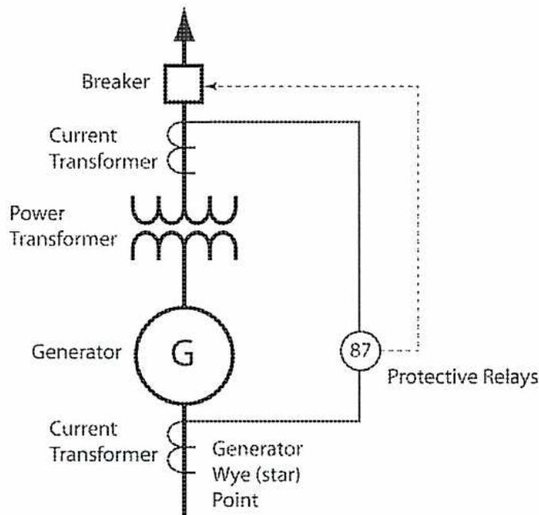
Figure 30
Differential Protection Single-Line Diagram
Induction cup relays operate on a similar principle to induction disc but generally have a faster response time. The cylinder, resembling the rotor of an induction motor, is capable of developing more torque than the disc type. Fig. 31 shows an example of an induction cup relay.
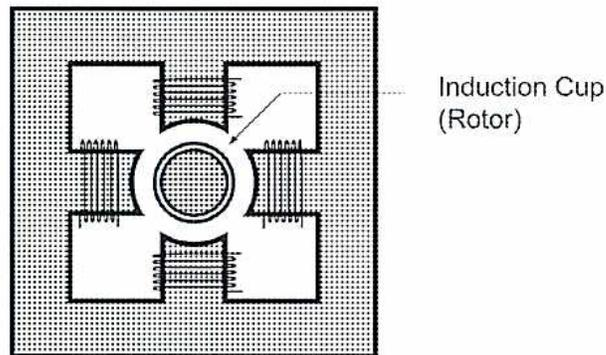
Figure 31
Induction Cup
The induction disc and induction cup relays derive their actuation signals from current transformers (CTs), potential transformers (PTs), or a combination of both. For example, a relay used with a current transformer may be sensitive to an overcurrent condition, or a relay used with a PT may be sensitive to an undervoltage condition.
Fig. 32 and Fig. 33 show exploded views of induction cup and induction disc relay units.
Figure 32
Induction Cup Relays
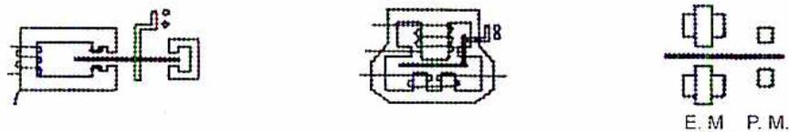
Figure 33
Induction Disc Relays
Fig. 34 shows a disc relay that derives its signal from a potential transformer.
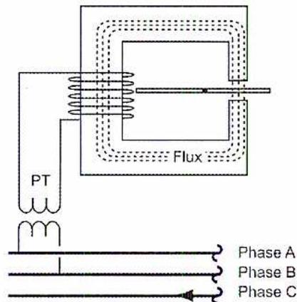
Figure 34
Induction Disc and Potential Transformer
A type of relay called a directional relay can be constructed using signals from two different actuation signals. These relays are used to sense the direction of power flow. Directional relays can be designed using two CTs, two PTs or one of each. The relay works based on the phase angle between the two currents that flow in the actuation coils. One signal is used as a reference and the other signal is used to polarize . If power flow changes direction, the relay is triggered.
Solid State Relays
Solid state relays (SSR), or semiconductor relays, are semiconductor devices that can be used in place of mechanical relays to send information. Solid state relays are significantly smaller and lighter and better suited to dusty conditions. Protective relaying based on solid state or digital devices is becoming the standard in many areas of electrical equipment protection. These relays offer much more sophisticated protection than electromechanical relays.
Differential Relays
Differential relays are used to sense the difference between two quantities. Fig. 35 shows a differential protection scheme for protecting a generator. The objective of this scheme is to monitor for faults within the generator. Current transformers are installed on both sides of the generator and measure the individual conductor currents. The CTs measure the difference between current flow at the wye point of the generator and current flows in the bus bars from the generator. The equipment between the CT's becomes the protected zone of this differential protection scheme. Protective relays can be installed to monitor several types of faults: faults between windings, stator ground faults, and faults between phases of the bus bars.
Differential current relaying is a basic application of Kirchoff's current law. In an ideal generator, the current entering and leaving the generator must be equal. If the sum of the currents from the secondary windings of the CTs is not zero, an internal fault is indicated.
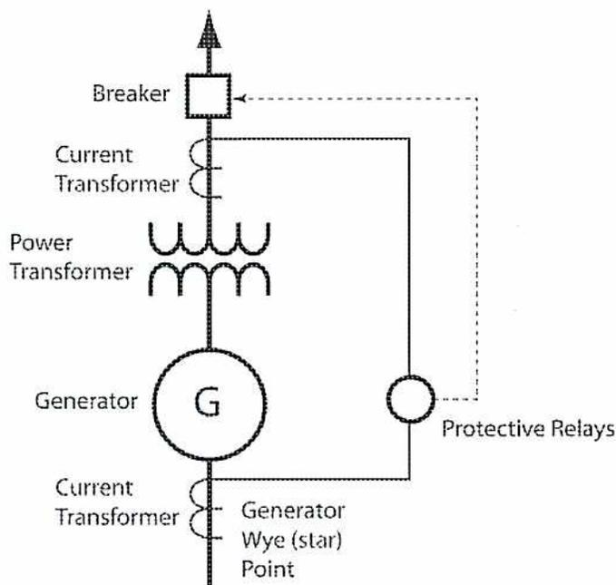
The diagram illustrates a differential protection scheme for a generator. At the top, a vertical line represents a bus bar with an arrow pointing upwards. Below the bus bar is a square symbol labeled 'Breaker'. Below the breaker is a 'Current Transformer' (CT) symbol, consisting of two overlapping semi-circles. Below the CT is a 'Power Transformer' symbol, consisting of three overlapping semi-circles. Below the power transformer is a circle labeled 'G' for the 'Generator'. Below the generator is another 'Current Transformer' (CT) symbol, identical to the one above. Below this CT is the 'Generator Wye (star) Point', indicated by a vertical line with a ground symbol. To the right of the diagram, a circle labeled 'Protective Relays' is connected to the secondary windings of both current transformers via dashed lines. The protected zone is the area between the two current transformers, encompassing the generator and the power transformer.
Figure 35
Differential Protection
Voltage Restrained Time Overcurrent
This type of relay is used due to the nature of a fault such as a 3-phase fault to ground in a generator. Voltage and current both decay simultaneously in this type of fault. Therefore, it is necessary to have a protective relay that adjusts the trip point for overcurrent accordingly.
Loss of Excitation
This protection scheme monitors for a loss of field excitation in the generator. When a generator loses its excitation, it starts drawing reactive current from the system it is supplying.
Protective monitoring equipment looks at the characteristics of generator power factor. The power factor changes when excitation is lost. The equipment can be calibrated to trip the generator output breaker if this condition exists.
Loss-Of-Synchronism Protection
When two power or interconnecting systems lose synchronism, there are large variations in voltages and currents throughout both systems. Voltages will be maximum and currents will be minimum when the systems are in phase. The voltages will be minimum and the currents maximum when the systems are 180 degrees out of phase.
The resulting high peak currents and off-frequency operation may cause winding stresses, pulsating torques, and mechanical resonances that are potentially damaging to the turbine/ generator. Therefore, to minimize the possibility of damage, the unit should be tripped without delay.
Phase Current Unbalance
Generators are designed to deliver power to balanced three-phase loads. Generators can tolerate unbalanced loads within certain limits but severe unbalanced currents within the stator windings can cause harmonics. This leads to increased eddy currents and hysteresis losses. Severe overheating can occur in the stator.
This type of protection compares the phase angles of the currents entering one terminal within a protected zone to the phase angles of the currents outside the protected zone.
If a fault occurs within the protected zone (internal fault), the currents will be in phase. If a fault occurs outside the protected zone, the currents will be 180 degrees out of phase. A phase current unbalance relay compares phase angles and trips coordinated breakers.
Underfrequency
When insufficient power is generated for the connected load, underfrequency results during heavy load demand. The drop in voltage causes the voltage regulator to increase excitation, which causes overheating in both the stator and rotor. At the same time, more power is being demanded and the generator is less able to supply it at the reduced frequency.
Prolonged operation at reduced frequencies can cause particular problems for gas or steam turbine generators, which are susceptible to damage from operating outside their normal frequency band. Turbines have more restrictions than generators at reduced frequencies because of possible mechanical resonance in many stages of a turbine. If generator speed is close to the natural frequency of any of the blades, there will be an increase in vibration which can lead to cracking of the blade structure.
While load shedding is the primary protection against generator overloading, underfrequency relays should be used to provide additional protection.
Stator Ground Fault
Insulation failure is one of the most common sources of generator faults. It is important to monitor for any non-standard current that may flow from the stator windings to ground. This current could be very small in magnitude but may indicate a serious fault is about to happen.
The stators of high-voltage modern generators are often wye connected. The star point or neutral point is grounded through a resistance. This is known as resistance grounding and is a technique used to limit the amount of fault current that flows to ground in the event of a fault.
Resistance grounding generally falls into two categories: low-resistance grounding and high-resistance grounding. A fault in a low-resistance grounding system will allow enough current to operate a protective relay. In high-resistance grounding, fault currents are low in magnitude, and other techniques must be used in the protection scheme. For example, some digital protective relaying equipment injects a square wave voltage into the stator windings and measures the return signal. The signal can be calibrated to measure insulation resistance.
Reverse Power
The direction of normal power flow is from a generator to a load. A generator may receive rather than deliver if power conditions change in a parallel generator scheme or in an interconnected power grid. This is an undesirable condition and may cause the generator to act as a motor.
Under standard conditions, the balanced three-phase voltage from a generator produces torque in a certain direction. Reverse power relays are sensitive to the real power component and insensitive to the reactive power component. If power is reversed, the torque produced in the relay will reverse and cause a trip.
Stator Overheating
Stator overheating is caused by overloading or failure of the cooling system. Overheating because of short-circuited laminations is localized, and it is just a matter of chance whether it can be detected before serious damage occurs.
Resistance temperature detector (RTD) coils or thermocouples are embedded in the slots with the stator windings of generators larger than 500 to 1000 kVA. Fig. 36 shows the bridge circuits employed with RTDs. These detectors are located at different places in the windings to indicate temperature conditions throughout the stator.
Several of the detectors that give the highest temperature indications are selected for use with a temperature indicator or recorder, usually with alarm contacts. The detector giving the highest indication may be arranged to operate a temperature relay to sound an alarm.
![Circuit diagram of an RTD bridge circuit. An AC voltage source is connected across the top and bottom nodes of a Wheatstone bridge. The top node is connected to one end of a 'Relay Polarizing Coil' and one of two 'Fixed Bridge Resistors'. The bottom node is connected to the other end of the 'Relay Polarizing Coil', one end of a 'Series Bridge Resistor', and one terminal of an 'R.T.D.'. The left node of the bridge is connected to the other end of the first 'Fixed Bridge Resistor' and one end of a 'Relay Operating Coil'. The right node is connected to the other end of the 'Series Bridge Resistor', the other terminal of the 'R.T.D.', and the other end of the 'Relay Operating Coil'. The 'Relay Operating Coil' is connected between the left and right nodes of the bridge.](042733dc5e8e7f5f30b60adba3266cde_img.jpg)
Figure 36
RTD Bridge Circuits
Overspeed
Overspeed protection is recommended for all prime mover driven generators. The overspeed element should be responsive to machine speed by mechanical or equivalent electrical connection. If it is electrical, the overspeed element should not be adversely affected by generator voltage.
The overspeed element may be furnished as part of the prime mover, its speed governor, or the generator. It should operate the speed governor, or whatever other shutdown means is provided, to shutdown the prime mover. It should also trip the generator circuit breaker. This is to prevent overfrequency operation of the generator itself from the AC system.
The overspeed element should be adjusted to operate about 3% to 5% above the full load rejection speed.
Phase Fault Protection
Phase faults, in a generator stator winding, can cause thermal damage to insulation, windings, and the core, and mechanical shock to shafts and couplings. Trapped flux within the machine can cause fault current to flow for many seconds after the generator is tripped and the field is disconnected.
Primary protection for generator phase-phase faults is best provided by differential relays. Differential relays detect phase-phase faults, three-phase faults, and double phase-to-ground faults. With low-impedance grounding of the generator, some single phase to ground faults can also be detected.
Objective 6
Explain the purpose, interpretation, and significance of the protection devices for a large motor.
MOTOR PROTECTION
AC motors are subject to the same electrical faults as generators and, in the case of motors of comparable size to generators, similar protection is used. Larger motors, used for power station auxiliaries and in industry, are protected against the following:
- • stator overheating
- • stator faults
- • overload and locked rotor (stalling)
- • unbalanced phase currents
- • undervoltage and underfrequency
- • maximum starts overtime
Stator Overheating Protection
Motors need protection against overheating caused by overload, stalled rotor, or unbalanced stator currents. For complete protection, three-phase motors should have an overload element in each phase. An open circuit in the supply to the power transformer feeding a motor causes twice as much current to flow in one phase of the motor as in either of the other two phases, as shown in Fig. 37.
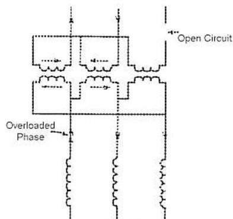
Figure 37
Motor Overheating Protection
Non-Essential Service Motors
Even though it is desirable to have overload elements in all three phases, motors rated at 1100 kW and below have elements in only two phases based on the assumption that the open-phase condition will be detected and corrected before the motor can overheat.
These overload elements consist of the following:
- • replica type thermal-overload relays
- • long-time inverse-time overcurrent relays
- • direct-acting tripping devices to disconnect the motor from its power source
As shown in Fig. 38, the replica type overload element provides the best protection as its time-current characteristic nearly matches the heating characteristic of a motor over the full range of overcurrent. Referring to Fig. 38, the inverse-time overcurrent relay will tend to overprotect at low currents and underprotect at high currents.
![Figure 38: Motor-heating and Protective-relay Characteristics. A log-log plot showing the relationship between motor heating and protective relay characteristics. The vertical axis is labeled 'Time, seconds' and ranges from 10 to 100. The horizontal axis is labeled 'Times rated motor current' and ranges from 0 to 8. Three curves are plotted: A (Motor), B (Replica relay), and C (Inverse-time relay). Curve A represents the motor's heating characteristic. Curve B represents the replica relay's characteristic, which closely follows curve A. Curve C represents the inverse-time relay's characteristic, which is above curve A at low currents (overprotecting) and below curve A at high currents (underprotecting).](fc857414626a8d94d132e12d9afe52a4_img.jpg)
A – Motor B – Replica relay C – Inverse-time relay
Figure 38
Motor-heating and Protective-relay Characteristics
Motors above 1100 kW are provided with resistance temperature detectors (RTDs) embedded in the stator slots between the windings. A single relay operating from these detectors is used instead of a replica type or inverse-time-overcurrent relays.
Single-phase motors only require an element in one of the two conductors.
Essential Service Motors
The protection of essential service motors is determined by minimizing unnecessary motor trips. A long-time inverse-time overcurrent relay actuates an audible alarm and leaves tripping the motor in the control of an operator.
For motors that are prone to locked rotor, instantaneous overcurrent relays, adjusted to pickup at 200 to 300 % of rated motor current, are used. Their contacts are connected in series with the inverse time overcurrent relay contacts to automatically trip the motor breaker. High-reset instantaneous relays should be used to make sure they will reset when the current returns to normal after the inrush of starting current has subsided. This type of equipment protection is shown in Fig. 39.
Essential service motors which use automatic tripping in addition to an alarm for overloads between about 115% of rated current and the pickup of the instantaneous overcurrent relays, should use thermal relays of either the replica type or the resistance temperature-detector type, depending on the size of the motor. These types of relays permit overload operation as far as possible beyond the point where the alarm sounds, but without damaging the motor to the extent that it must be repaired before it can be used again.
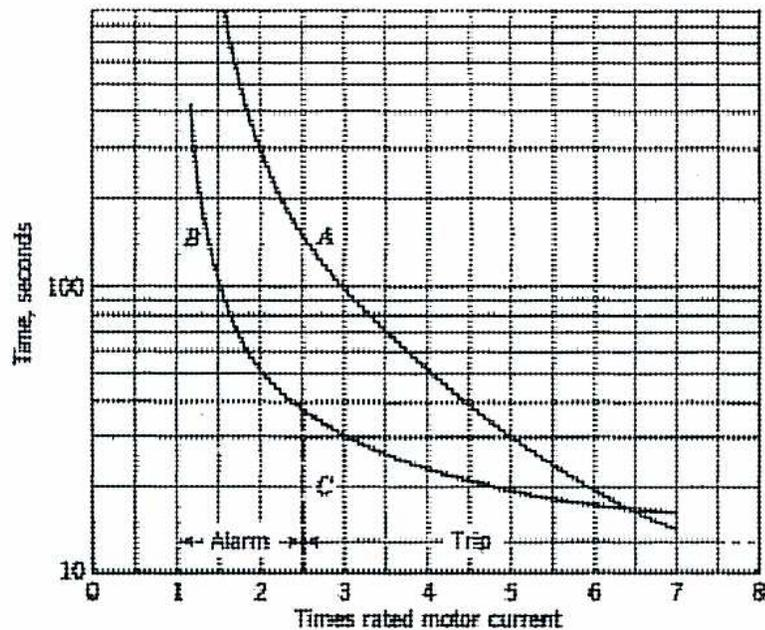
The graph shows the relationship between motor current (x-axis, 0 to 8 times rated) and tripping time (y-axis, 10 to 100 seconds) for three different relay settings (A, B, and C). The curves are inverse-time characteristics. A vertical dashed line at approximately 2.5 times rated current separates the 'Alarm' region (left) from the 'Trip' region (right). Curve A is the slowest, Curve B is the fastest, and Curve C is intermediate.
| Times rated motor current | Time (seconds) - Curve A | Time (seconds) - Curve B | Time (seconds) - Curve C |
|---|---|---|---|
| 1.5 | 100 | 10 | 50 |
| 2.0 | 50 | 5 | 25 |
| 3.0 | 20 | 2 | 10 |
| 4.0 | 12 | 1 | 6 |
| 5.0 | 8 | 0.8 | 4 |
| 6.0 | 6 | 0.6 | 3 |
| 7.0 | 5 | 0.5 | 2.5 |
Figure 39
Protection Characteristic for Essential Service Motors
Stator Faults
DC overcurrent tripping devices on the breaker take care of faults to ground or between phases; these are thermal or dashpot types giving an inverse time-current characteristic and usually provide an instantaneous trip at high current. On large motors above 50 kW, instantaneous overcurrent relays supplied from current transformers are more common; two in the phases and one in the residual circuit.
The phase relays have to be set well above the starting current, and the latest type can give a more reasonable setting because it is not affected by the DC component of the inrush current. Fuses are used for protecting smaller motors, but they involve the risk of leaving the motor connected to a single-phase supply.
For stator faults, thermal overload relays with instantaneous overcurrent relays usually comprise the main protection. The instantaneous overcurrent relays are usually set very high because they have to surmount the high-starting current of the motor, but they are valuable for clearing winding and terminal faults.
For motors of 1100 kW and above, the saving in repair costs by the quick clearing of faults justifies the cost of differential protection.
Overload and Locked Rotor (Stalling)
A motor heats according to an \( I^2t \) function. Good protection is provided by thermal overcurrent relays using bimetallic spiral movements as shown in Fig. 40.
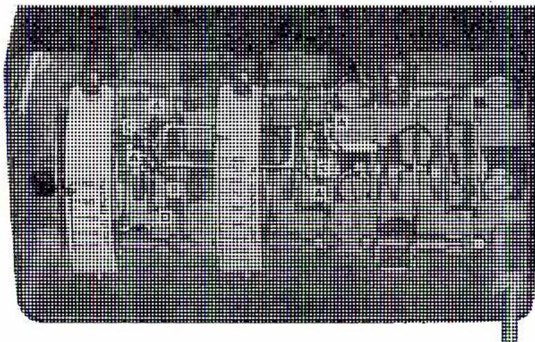
Figure 40
Thermal Overload and Unbalance Movement
The slow reset of these relays prevents restarting the motor until it has cooled. Furthermore, the heat storage property of the relay gives it different hot and cold time-current characteristics which correspond to those of the motor. Superior characteristics can be obtained with a thermistor bridge and a thermal replica device.
In single-phase fractional kW motors, the thermal element is usually a bimetallic disc which snaps into the operated position above a certain temperature and opens the supply.
The \( I^2t \) relays are set to operate on 15% overload with continuously rated motors and up to 40% overload with motors having overload capacity, depending upon the service factor.
When a motor stalls, either due to trouble with the connected load or low voltage, both the stator and rotor windings will be overheated. Some form of protection is provided to shut the motor down before the locked-rotor current persists long enough to cause damage, but it must not shut the motor down during a normal start. It is not always possible to provide adequate locked-rotor protection with an overload device without upsetting the overload protection.
Unbalanced Phase Currents
A type of protection, Fig. 40 uses three bimetallic spirals energized by currents from the three phases. The contacts are arranged so that if any spiral moves differently from the others due to more than 12% unbalance, contacts meet and trip the supply breaker. The same spirals also provide overload protection.
This is an important feature of motor protection. Due to the difference between the positive and negative sequence reactance of a motor, a small voltage unbalance causes a much higher current unbalance, which results in overheating in one winding. An example would be a motor operating at rated load with a 3% voltage unbalance. This could result in an increased current flow of approximately a 25% increase in one line, giving 56% overheating in one winding. The worse case would be complete loss of one phase of the supply due to a blown fuse or a bad contact.
Undervoltage and Underfrequency
Running on undervoltage causes overcurrent which in turn causes overload or temperature relays to trip; an exception to this is a fan motor whose load drops sharply with speed preventing the current from increasing. It is usual to provide undervoltage protection which has an inverse time characteristic which overrides temporary voltage drops.
Maximum Starts OverTime Protection
In repeated starting and intermittent operation very little heat is carried away by the cooling air produced by a turning rotor. Repeated starts can build up temperatures to dangerously high values in either stator or rotor windings unless enough time is provided to allow the heat to dissipate.
The NEMA MG1-1993 (Motor Guide) sections 12.50, 20.43, and 21.43 provide guidelines for typical installations. These standards allow two starts in succession, coasting to reset between starts with the motor initially at ambient temperature, and one start when the motor is at a temperature not exceeding its rated load operating
temperature. This assumes that the applied voltage, load torque during acceleration, method of starting, and load inertia are all within values for which the motor was designed.
The application and protection of motors having abnormal starting conditions must be coordinated with the manufacturer.
Chapter Questions
B3.6
- 1. Describe the difference between continuous current and interrupting capacity.
- 2. What is the main difference between breakers and fuses?
- 3. Briefly describe the inverse time principle for breakers and fuses.
- 4. True or False. The inrush current for devices such as motors and transformers is significantly lower than the normal rated current for the devices.
- 5. Fill in the blanks. _____ fuses are not current limiting and as a result limit the duration of a fault on the electrical system, not the magnitude. _____ fuses are fuses that, when their current responsive elements are melted by a current within the fuse's specified current limiting range, abruptly introduce a high resistance to reduce current magnitude and duration, resulting in subsequent current interruption.
- 6. What is the maximum interrupting capacity you would expect to find in a 600 volt Class J fuse?
- 7. Briefly describe the thermal-magnetic principle commonly used in breakers.
- 8. Current limiting fuses reduce the magnitude of current and clear the fault in less than \( \frac{1}{2} \) cycle. How much time is required for \( \frac{1}{2} \) cycle on a 60 Hz. system?
- 9. Describe the principle behind a compressed air circuit breaker.
- 10. Give two functions of the oil used in an oil circuit breaker.
- 11. \( \text{SF}_6 \) is the symbol for sulphur hexafluoride. Is \( \text{SF}_6 \) a gas or a liquid?
- 12. Is the dielectric of a vacuum higher or lower than ambient air?
- 13. What is the purpose of an arc chute?
- 14. Name the two main categories of electromechanical relays.
- 15. Name two different types of instrument transformers that are used to provide current and voltage signals to protective relays.
- 16. What type of protective relaying scheme shown in the figure below?
![A single-line diagram of a generator protection system. A vertical line represents the main circuit. From top to bottom, it contains an upward-pointing arrow, a square labeled 'Breaker', a 'Current Transformer' (represented by two overlapping circles), a 'Power Transformer' (represented by two overlapping U-shaped coils), a circle labeled 'G' for 'Generator', and another 'Current Transformer'. Below the second current transformer is the 'Generator Wye (star) Point'. To the right, a dashed line connects the 'Protective Relays' (a circle) to the 'Breaker'. The relays are connected to the second current transformer and the generator wye point.](e69b9188aa2c14ec6b21c83f711fef65_img.jpg)
- 17. What type of protective relaying would be used to prevent an alternator from motoring?
- 18. A motor has a service factor of 1.10. What does this mean?
- 19. What is meant by the term “selectivity” as it pertains to protective relaying?
- 20. A current transformer has a ratio of 100:5. If 80 A are flowing in the primary of the transformer, what amount of current is flowing in the secondary?